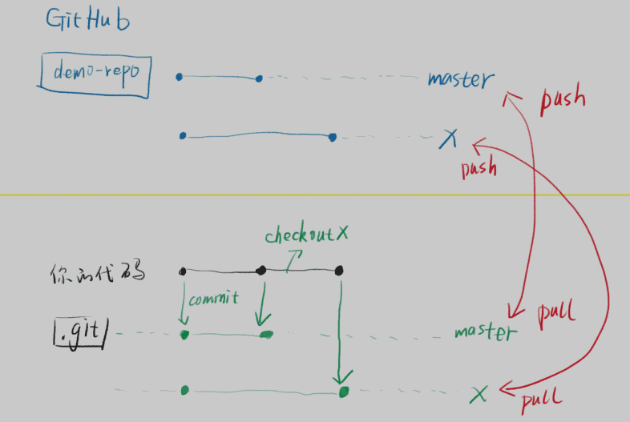

方方-git/markdown
1 命令行：文件的增删改查¶
-
查：
- 目录：pwd, ls
- 文件：cat, head, tail, less
-
增：
-
目录：mkdir
$ mkdir -p a/b/c a/d/c -
文件：touch, echo, cp
$ touch 1.txt 2.txt$ echo -e "haha\nhehe" > 4.txt
-
-
删：rm
-
其他：
$ ls --help | less$ echo $?
2 &&, ;¶
-
&&
当一条命令成功之后，执行另一条
-
;
不管成功失败，都执行另一条
3 git 本地仓库¶
git配置：
git config --global user.name 你的英文名
git config --global user.email 你的邮箱
git config --global push.default simple
git config --global core.quotepath false
git config --global core.editor "code --wait"
git config --global core.autocrlf input
$ git config --global --list
注意：上面的英文名和邮箱跟 GitHub 没有关系。
可以跟 GitHub 的用户名和邮箱保持一致，
也可以不一致。我的是一致的。
git常用命令：
-
.git目录就是本地仓库
- 它不会重复复制相同的文件（优化）
- 它可以支持多个分支
$ git init //创建.git目录
$ git add 路径
$ git commit -m 字符串 //提交，并说明提交理由
//如果字符串里有空格就要用引号包起来
$ git commit -v
git log
git reflog
git reset --hard xxxxxx //切换版本
//reset会使本地未commit的改动消失
git branch x //基于当前commit创建一个新的分支
git checkout x //切换到另一个分支
//当前目录有未提交的代码，只要跟另一个分支不冲突，就不需要理会
git stash //通灵术，如果上面的情况冲突了使用，也可以合并冲突
git merge x //将另一个分支合并到当前分支
//可能有冲突，也可能没冲突
git status
git status -sb //查看哪些文件冲突了
//解决冲突 -> git add -> git status -sb -> 重复... -> git commit(不需要选项)
git branch -d x //删除分支
4 git远程仓库GitHub¶
GitHub

ssh key 验证身份
上传代码是用私钥加密的，GitHub用公钥解密。如果解开了，说明是配对的。
- 公钥: GitHub账号
- 私钥: 我的电脑
HTTPS协议需要每次都输入密码
如何生成ssh key：
ssh-keygen -t rsa -b 4096 -C 你的邮箱
//然后一直回车，直到没有提示
cat ~/.ssh/id_rsa.pub //得到公钥内容
ssh -T git@github.com //回答yes并回车
常用命令
git clone
git clone git@?/xxx.gitgit clone git@?/xxx.git yyygit clone git@?/xxx.git . //不会新建目录
git pull
git push
git commit
git commit -v --amend
git remote add origin git@github.com:shawnlxf/demo-1.git
//在本地添加远程仓库的地址
//origin是远程仓库的默认名字，可以换，建议不要换
git push -u origin master
//推送本地master分支到远程origin的master分支
//-u origin master的意思是设置上游分支，之后就不用再设置了
上传到两个远程仓库
git remote add repo2 git@xxxxxx
git push -u repo2 master
如何上传其他分支：
-
方法1：
$ git push origin x:x -
方法2：
$ git checkout x $ git push -u origin x
杂项
-
GitHub用来备份.git/而已
-
$ yarn global add git-open用 git open 打开GitHub远程仓库首页
如何下载某个分支：
- 先下载整个仓库，然后git checkout分支名
- 或者搜命令
国内的代替品
- coding.net (腾讯战略投资)
- gitlab.com
- 码云 gitee.com (开源中国)
远程仓库
- 只是本地仓库的备份，所以变化都要先commit到本地仓库，然后push到远程
- 无法下载部分代码，只能clone整个仓库
git pull
git pull repo2 master:x
git remote -v
git remote remove origin2
yarn global add git-open
高级操作：
touch ~/.bashrc
echo 'alias ga="git add"'>> ~/.bashrc
echo 'alias gc="git commit -v"'>> ~/.bashrc
echo 'alias gl="git pull"'>> ~/.bashrc
echo 'alias gp="git push"'>> ~/.bashrc
echo 'alias gco="git checkout"'>> ~/.bashrc
echo 'alias gst="git status -sb"'>> ~/.bashrc
好看的glog:
-
最后 code ~/.bashrc 在文件最后加上
alias glog="git log --graph --pretty=format:'%Cred%h%Creset -%C(yellow)%d%Creset %s %Cgreen(%cr) %C(bold blue)<%an>%Creset' --abbrev-commit -- | less" -
重启命令行，或者运行 source ~/.bashrc
美化历史命令
git rebase -i xxxx
出错怎么办：
- 看log提示
-
中止
git rebase --abort 可以取消rebase -
继续
git rebase --continue 可以继续
通灵术
不想提交代码，又不想删除代码，那可以找个空间把代码临时藏起来
git stash / git stash pop
github pages
- github新建仓库: shawnlxf.github.io
- 上传之后进入仓库settings, GitHub Pages -> Source -> master branch
-
把public外的目录上传到github，如果添加远程仓库出错
$ git remote set-url origin git@xxxxxx
5 markdown¶
- GitHub直接预览markdown
- 文件后缀.md 或 .markdown